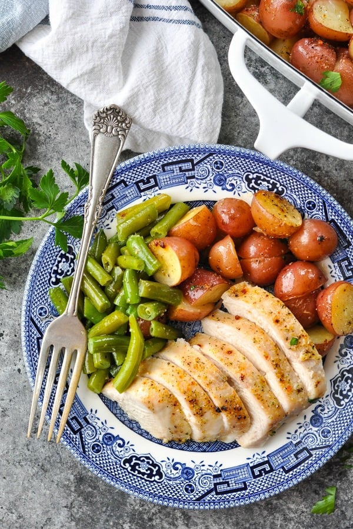

One Pan Chicken and Potatoes with Green Beans

Description
This One Pan Chicken and Potatoes with Green Beans is an easy dump-and-bake dinner recipe that comes together with just 10 minutes of prep! The chicken breasts, potatoes and vegetables are seasoned with zesty Italian spices and baked in a single dish for a simple, flavorful and hearty meal that suits your busy schedule.
As for every meal on Odins recipes this one is especially valuable for ambitious athletes looking for a healthy meal with good macros.
Ingredients
- Boneless, skinless chicken breasts
- Sweet onion
- Frozen cut green beans
- Baby red potatoes
- etc.
Steps
- First, spread the sliced onion in the bottom of a baking dish and arrange the chicken on top in the center of the pan.
- Next, place the potatoes on one side of the chicken and the frozen green beans on the other side.
- Whisk together the melted butter and seasoned salt, then drizzle the butter mixture over the potatoes, chicken and green beans.
- etc.